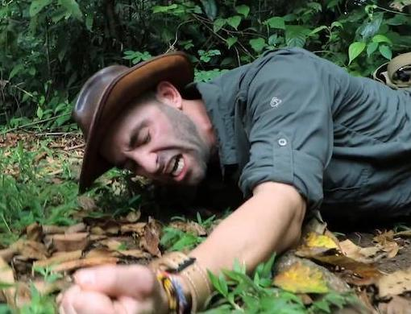

Ogden is a place for Trail Creatures, big and small. From the mountain to the valley, nature welcomes those who call.
There are two trailheads that leave right from the Weber State University campus, 36th St Trailhead and Skyline Dr Trailhead. These trailheads provide access to a variety of trails. Weber Pathways has a Trail Etiquette webpage.

There are several trailheads in the Ogden area. All are marked 'TH>' at Ogden Trails Network Map. Click for more information. Here are a few of the trailheads close to WSU.
| TRAILHEAD | ADDRESS | ACCESS TRAILS |
|---|---|---|
| WSU Parcourse Trailhead | 3910 Skyline Pkwy | WSU Parcourse Trail Strong’s Canyon Trail |
| 36th Street Trailhead | 1660 36th St | Gib’s Loop Trail Bonneville Shoreline Trail Strong’s Canyon Trail WSU Parcourse Trail |
| 29th Street Trailhead | 2902 Buchanan Ave | Waterfall Canyon Trail Taylor Canyon Trail Bonneville Shoreline Trail Malan’s Peak Trail Gib’s Loop Trail |
| Beus Canyon Trailhead | 4740 S 1900 E | Beus Canyon Trail Bonneville Shoreline Trail |